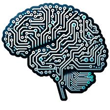

Temas de Estudio

Programación y Desarrollo de Software
Aprenderás lenguajes de programación como Python, Java y C++. También estudiarás técnicas de desarrollo ágil y diseño de software.
Redes y Seguridad Informática
Entenderás el funcionamiento de redes de comunicación, protocolos, y aprenderás cómo proteger sistemas frente a amenazas cibernéticas.

Bases de Datos y Gestión de Sistemas
Aprenderás a diseñar, implementar y gestionar bases de datos para almacenar grandes volúmenes de información de manera eficiente.

Inteligencia Artificial y Machine Learning
Te introducirás en los algoritmos y modelos que permiten a las máquinas "aprender" y realizar tareas complejas.

Arquitectura de Computadoras
Te introducirás en los algoritmos y modelos que permiten a las máquinas "aprender" y realizar tareas complejas.